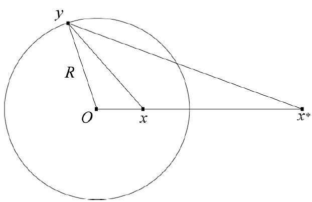
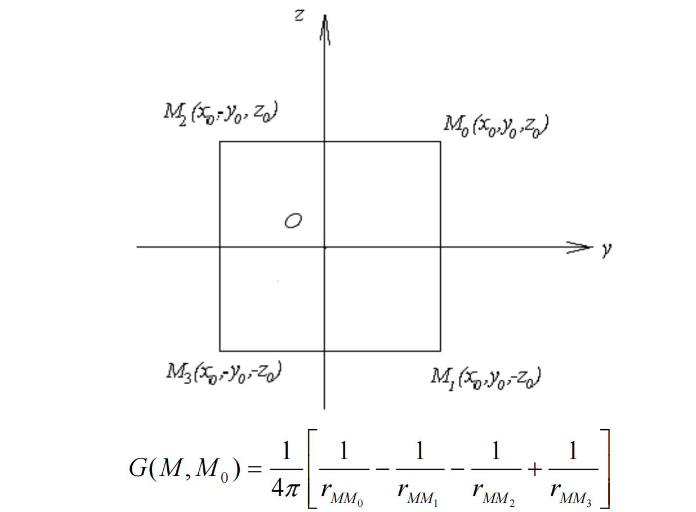

第五章 Green函数法
Green函数法用于解决位势方程.
Green公式
- 散度定理: ∫D∇⋅wdx=∫∂Dw⋅ndS.
- 令 w=u∇v, 可得第一Green公式: ∫DuΔvdx=∫∂Du∂n∂vdS−∫D∇u⋅∇vdx.
- 交换 u,v 并相减, 可得第二Green公式: ∫D(uΔv−vΔu)dx=∫∂D(u∂n∂v−v∂n∂u)dS.
Green函数
- 在第二Green公式中, 令 v=G(x,y).
- 为了从积分中提取出 u, 令 −ΔyG(x,y)=δ(x−y).
- 针对Dirichlet条件, 为了消去 ∂n∂u, 令 y∈∂D,G(x,y)=0.
- 针对Neumann条件, 为了消去 u, 令 y∈∂D,∂n∂G(x,y)=0.
- 注: 严格来说, 为了满足散度定理的要求, 应该令 ∂n∂G(x,y)=∣∂D∣1. 对于无界边界(比如无限大平面), 有 ∣∂D∣1=0.
Green函数性质
- 对称性: G(x,y)=G(y,x).
- 奇异性: G(x,y)=v(x,y)+Φ(x,y).
- 其中, v(x,y) 是调和函数, Φ(x,y) 为位势方程基本解.
调和函数
- 若Δu=0, 称 u 为调和函数.
- 基本性质:
- 平均值公式: 设 Br(x) 为圆心 x, 半径 r 的球, 则 u(x)=∣∂Br(x)∣1∫∂Br(x)u(y)dS=∣Br(x)1∫Br(x)u(y)dS. 即: 球心值=球面平均=球体平均.
- 最值原理: x∈Dˉmaxu=x∈∂Dmaxu, x∈Dˉminu=x∈∂Dminu. 即: 最值在边界取到.
位势方程基本解
即求解方程:
−ΔΦ=δ(x),x∈R3
- r>0 时, 求解Laplace方程 −ΔΦ=0.
- 由于 Φ 仅与 r 有关, 有 ΔΦ=Φ′′(r)+rn−1Φ′(r), 其中 n 为Laplace算子的维数.
- 利用 r=0 处的条件求解常数 C.
- 利用通量法, 考虑 ∫Bε(0)−ΔΦ(x)dx=1, 带入Green公式.
- 基本解的形式:
Φ(x)={2π1ln∣x∣1(n−2)ωn∣x∣n−21n=2n≥3
- 其中, ωn 为n维单位球面的表面积.
Green函数的构造: 电像法
- 针对不同边界条件构造Green函数, 使其满足对应的边界条件.
- 使用位势方程基本解构造前述Green函数, 每个基本解对应一个点电荷. 基本解的叠加等价于物理中电势的叠加.
特殊区域的Green函数
- 说明:
- 下述构造均以Dirichlet条件为例.
- 下述构造中, x 为源点, 即点电荷所在的点. y 为场点, 即空间中的点. 带入Green公式积分时, 显然应令场点位于边界. (Green函数的对称性亦可使两者交换)
- 上半空间 R+3: G(x,y)=4π∣x−y∣1−4π∣x∗−y∣1.
- 三维球 BR:
- 镜像电荷位置: x∗=∣x∣2Rx.
- 镜像电荷大小: q=∣x∣R=R∣x∗∣.

- 1/4空间:

- 半圆域: